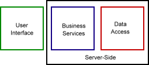

|
|
|
|
|
Creating n-tier web applications with DynAPI 3.0 has never been easier. With the support for remote scripting and synchronous connections both client and server can send and receive data without the need to refresh the web page.
Figure 1.
With DynAPI 3.0 it is now possible to easily build applications from component building blocks that can be shared, reused, and relocated across the Internet. By partitioning an application’s tasks into logical tiers of services, it becomes possible to encapsulate business rules (or services), data access and user interface tasks into shared, reusable components that can be easily modified and distributed anywhere on the Internet.

Figure 2.
The good thing about DynAPI Remote Script (or Web Service) technology is that it works well with existing Internet technology. No need to add any new software or hardware because it advantage of what you already have.
Remote Scripting in DynAPI is made possible through what is called Simple Object and Data Access - Remote Procedure Call (SODA-RPC). SODA (for short) is used to convert JavaScript objects (and data types) to XML, which is sent via the Internet to a web server. This XML document can be parsed on both client and server without the need of an XML parser, thus making it possible for older browsers (such as NS4) to advantage of SODA-RPC.
An object sent from the client to the server is first converted to XML and then back to an object (or the corresponding data type) on the server. This makes it possible for server-side programs written in perl, php, asp, etc to interact with client-side objects as if they where created locally.
Figure 3.
The possibilities are endless. Just take a look at some of the application you can create using DynAPI Remote Scripting:
|
Figure 4. |
See SODA-RPC documentation for more
information.